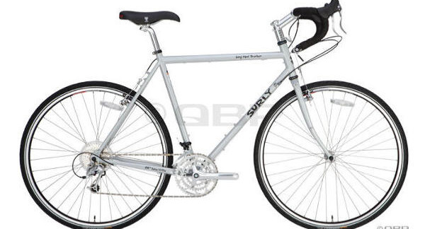
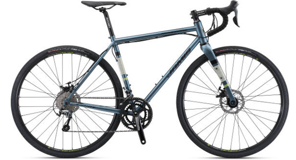
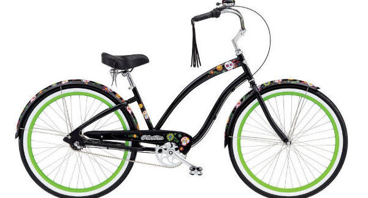

Types of bikes
Touring Bike
Touring bicycles are another special type of road bike. They are designed to be ridden on pavement, but are more durable for use on self-supported long-distance riding. They have all of the necessary mounting bolts for cargo racks and fenders, and although they still have a drop handlebar, they usually have a more relaxed frame design so that the rider is more upright, for more comfort when riding long distances for multiple days at a time. They have a lower gear range compared to regular road bikes, to allow for carrying heavy loads up steep hills. They also make good commuter bicycles, because of their durability and ability to carry heavy loads.
Road Bike
Adventure Road Bicycles are one of the newest categories of bicycle. They are sometimes called all-road bikes, any-road bikes, or gravel bikes, and are the most versatile sub-category of road bike. Similar to cyclocross bikes, they have drop handlebars and the ability to use wider tires. The frame geometry is longer and more upright compared to a cyclocross bike, however, making these bikes more suitable for long days in the saddle, light touring, and commuting.
Cruiser Bike
Cruiser Bicycles are similar to hybrid bikes, in that they are designed for casual riding, and have a very comfortable, upright riding position, and a large, comfortable seat. Cruisers usually have wide "balloon" tires, and handlebars that are even more upright, and in some cases, swept back compared to hybrid bikes. Most cruiser bikes are single-speed or 3-speed, and have the old-fashioned coaster brake (where you pedal backwards to stop). They can be used for short-distance commuting and errands, as long as your route is fairly flat. Some cruiser bike manufacturers make a wide array of colorful models available, to suit the fashion tastes of any bike afficionado.
Mountain Bike

Mountain Bicycles are design for riding rough off-road trails. They have flat or upright handlebars, and a very low gear range for pedaling up steep trails. Most mountain bikes have some type of shock absorbers or suspension. Mountain bikes with front suspension only are called hardtails; mountain bikes with both front and rear suspension are called full-suspension bikes or duallies. Mountain bikes with no suspension are called rigid. Mountain bikes can be outfitted for use as touring or commuting bikes, although they would not be as light or efficient as traditional touring or commuting bikes. Fat bikes, with their extremely wide tires, are included in the mountain bike category.
Dual-Sport Bikes
Dual-Sport Bicycles are a sub-category of hybrid bikes oriented towards riders who want the multi-surface versatility of a hybrid bike, but want a little more aggressive style and riding position. They have a flat or upright handlebar, although not as upright as regular hybrid bikes; they usually have a smaller, more performance-oriented seat, rather than a large comfort seat. Most have front suspension. Dual-sport bikes make good commuter bikes, and are also good for touring on unpaved trails.